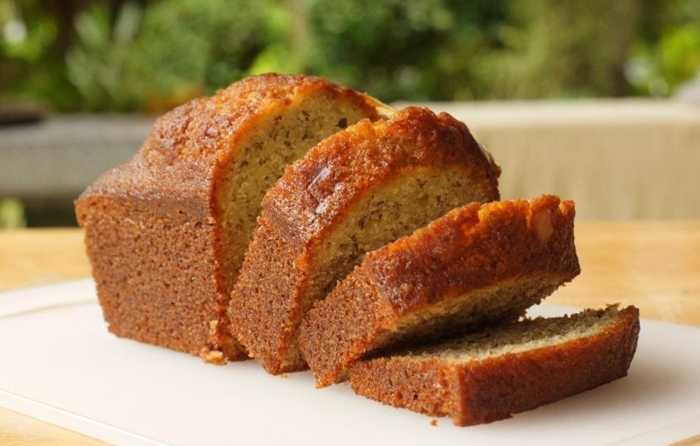

Bolo de banana
postado 12 março 2021 Ingredientes
- 2 bananas-prata maduras
- ½ xícara (chá) de manteiga (em temperatura ambiente)
- 1 xícara (chá) de açúcar
- 2 ovos
- 1 ½ xícara (chá) de farinha de trigo
- 1 colher (chá) de fermento em pó
- 1 colher (chá) de extrato de baunilha (opcional)
Modo de preparo
- Preaqueça o forno a 180 ºC (temperatura média).
- Unte com manteiga uma fôrma para bolo inglês de 22 cm x 10 cm. Polvilhe com farinha de trigo, chacoalhe bem para espalhar e bata sobre a pia para retirar o excesso.
- Na batedeira, coloque a manteiga, o açúcar e bata em velocidade alta até formar um creme claro e fofo. Equanto isso, descasque as bananas, coloque num prato e amasse bem com um garfo.
- Sem parar de bater, junte um ovo de cada vez ao creme de manteiga e açúcar, batendo bem a cada adição. Acrescente as bananas amassadas, o extrato de baunilha e bata apenas para misturar.
- Desencaixe a tigela da batedeira, adicione a farinha em etapas, passando por uma peneira, e misture delicadamente com uma espátula a cada adição. Por último misture o fermento.
- Transfira a massa para a fôrma untada e leve ao forno para assar por cerca de 40 minutos - para conferir se o bolo está assado, espete um palito: se sair limpo, está no pronto. Retire o bolo do forno e deixe esfriar em temperatura ambiente antes de desenformar. Sirva a seguir.
Destaques da semana
No café da manhã, corte em fatias e coloque este bolo na torradeira. Humm, quentinho com manteiga é uma perdição. Aprenda a fazer este bolo de banana simples e rápido!
Leia maisCrocante for fora e molhadinho por dentro, este empadão leva: frango, celoba, tomate, milho e requeijão cremoso. Aprenda a fazer este delicioso empadão!
Leia mais